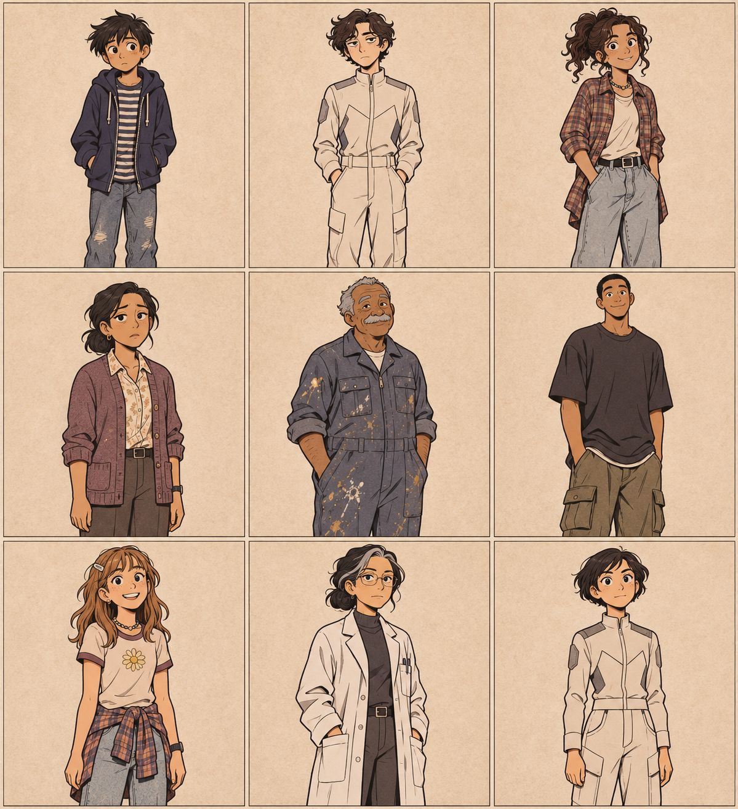
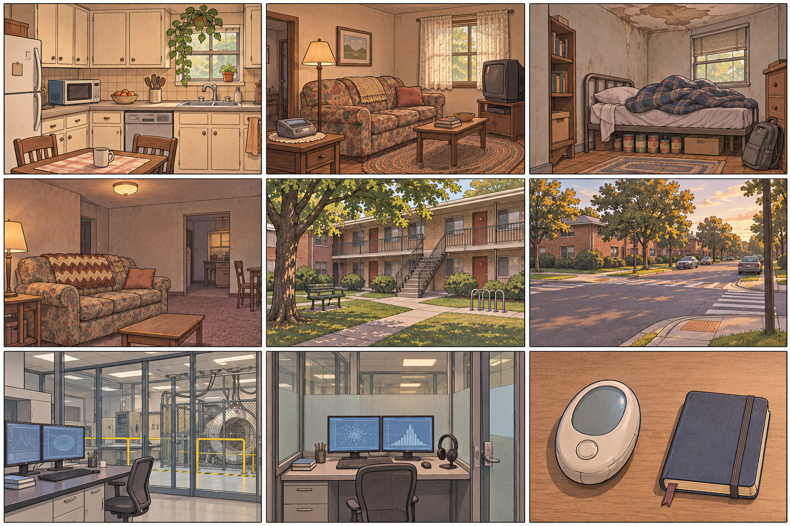

챕터 18~28 원문 분석에 따른 제작 기준입니다. 원문 사실과 제작 고정을 구분해 기록합니다.
현대 중학생용 생활 그래픽노블. 둥근 잉크선, 낮은 채도의 따뜻한 파스텔, 큰 표정의 눈, 작은 bean-shaped 입, 종이 질감. 실사·3D·배우 닮은꼴·말풍선·장식 문자는 사용하지 않습니다.


12세. Fox Run의 Rosario 아파트에 어머니와 산다. Y2K 비축물을 침대 아래에 숨기며 새 Jordans, 중고 책, 휴대용 스테레오를 소중히 여긴다. 작고 마른 체형, 짙은 헝클어진 머리, 수줍고 걱정이 많은 표정을 고정한다.
12세, slim, dark tousled hair, navy hoodie, striped shirt, worn jeans, clean white sneakers. Waldenbooks bag, paperback, answering-machine phone, Y2K cache.
2199년에서 온 16세 학생. 원래 흰색 홀로드립을 입고 EGG와 제목 없는 sumbook을 지닌다. 1999년 체류 중 Beejee의 화물바지와 낡은 티셔츠를 빌려 입고 감기에 걸려 창백하고 지친다.
16세, pale slim face, wavy dark hair, off-white futuristic jumpsuit when original; borrowed cargo pants and old T-shirt when stranded. EGG and small titleless sumbook.
16세 베이비시터이자 Michael의 가까운 친구. 갈색 눈, 짙은 곱슬머리, 딸기 향의 생활용품, 조용하지만 위기에서 행동하는 성격. Beejee의 여동생이며 빨간 1987 Toyota Corolla Eloise를 운전한다.
16세, brown eyes, dark curly hair, late-1990s casual clothes. Eloise keys, paperback, medicine, phone.
Michael의 어머니. 여러 일을 하며 늘 피곤하다. 평소 포니테일, Mosley의 사망 소식을 전하는 아침에는 풀린 머리와 붉어진 눈을 유지한다.
Fox Run 관리인. 햇볕에 그을린 갈색 피부, 주름진 얼굴, 회색 머리와 콧수염, 페인트가 묻은 작업복. 24장 이후에는 자동응답기 음성과 기억으로만 나타난다.
Maria Sabio는 2199년 52세 Chief STS 과학자. Ian 18세, Shale 17세, Bex 14세 학생. Beejee는 Gibby의 19세 오빠, Paige는 Michael의 친절한 학교 친구다. 가족 관계와 얼굴을 서로 바꾸지 않는다.
작은 주방의 전자레인지·조리대·식기세척기, 거실의 낡은 소파·오래된 TV·자동응답기, 침실의 물 얼룩 천장과 침대 아래 비축물이 반복되는 기준이다.
Beejee의 거실은 낡은 소파와 값싼 카펫, 복도 동선으로 고정한다. Fox Run은 2층 아파트 외부·안뜰·계단·나무와 보행로가 있는 생활 공간이다.
Laboratory A2122는 유리벽·모니터·STM 장치 구역, secure booth 0738은 작은 책상·모니터·헤드셋·보안 유리 부스로 고정한다.